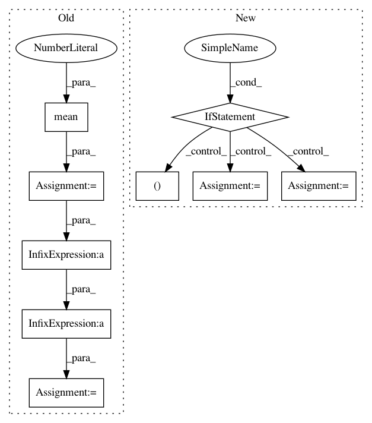

135bed105e13d5ceaf97207e20c5b2e3b6c19ef6,scanpy/preprocessing/_utils.py,,_get_mean_var,#Any#,8
Before Change
mean = mean.A1
mean_sq = mean_sq.A1
else:
mean_sq = np.multiply(X, X).mean(axis=0)
// enforece R convention (unbiased estimator) for variance
var = (mean_sq - mean ** 2) * (X.shape[0] / (X.shape[0] - 1))
else:
from sklearn.preprocessing import StandardScaler
scaler = StandardScaler(with_mean=False).partial_fit(X)
After Change
def _get_mean_var(X):
if sparse.issparse(X):
mean, var = sparse_mean_variance_axis(X, axis=0)
else:
if STANDARD_SCALER_FIXED:
from sklearn.preprocessing import StandardScaler
scaler = StandardScaler(with_mean=False).partial_fit(X)
mean, var = scaler.mean_, scaler.var_
else:
mean = X.mean(axis=0, dtype=np.float64)
var = X.var(axis=0, dtype=np.float64)
// enforce R convention (unbiased estimator) for variance
var = var * (X.shape[0] / (X.shape[0] - 1))
return mean, var
In pattern: SUPERPATTERN
Frequency: 3
Non-data size: 9
Instances
Project Name: theislab/scanpy
Commit Name: 135bed105e13d5ceaf97207e20c5b2e3b6c19ef6
Time: 2019-10-08
Author: ivirshup@gmail.com
File Name: scanpy/preprocessing/_utils.py
Class Name:
Method Name: _get_mean_var
Project Name: explosion/thinc
Commit Name: 3611452afac53b53f3e41ee83d7fc7bd811ffb81
Time: 2018-03-14
Author: honnibal+gh@gmail.com
File Name: thinc/neural/_classes/batchnorm.py
Class Name: BatchNorm
Method Name: begin_update
Project Name: explosion/thinc
Commit Name: ff0d04f231cc8cd912a99982269dca0c41a68316
Time: 2018-03-14
Author: honnibal+gh@gmail.com
File Name: thinc/neural/_classes/batchnorm.py
Class Name: BatchNorm
Method Name: begin_update